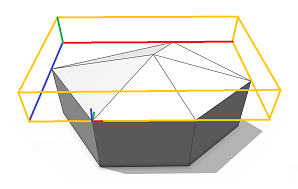
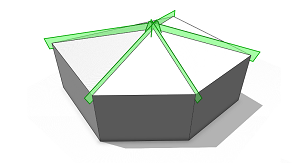

roofPyramid operation
Syntax
roofPyramid(angle)
roofPyramid(valueType, value)
Parameters
- valueType (selector)
byAngle, byHeight Type of roof generation - value (float)
Angle or height of the roof-planes as specified by valueType. - angle (float)
Angle of the roof-planes (generation byAngle).
Description
The roofPyramid operation builds a pyramid roof perpendicular to each face of the current shape's geometry. The polygon center (average of all vertices) gets extruded along the face normal by the given height and connected to all polygon vertices. The new triangles are the roof faces. If an angle is given the height is chosen such that the angle between roof triangle 1 and the polygon is as specified.
The connectivity of the roof mesh is optimized for trim plane generation to cut bricks inserted into the roof planes (see examples below).
Scope
The scope orientation is set in the following way:
- x-axis direction is kept as much as possible (old x-axis is projected to the plane of the first face)
- y-axis along the face normal of the first face
- z-axis normal to the two above
The scope's sizes are adjusted to tighly fit the extruded geometry.
Related
- envelope operation
- extrude operation
- offset operation
- roofGable operation
- roofHip operation
- roofRidge operation
- roofShed operation
- taper operation
Examples
Simple Pyramid Roof
A basic pyramid roof is generated on top of an extruded L-lot. |
Lot --> extrude(10) Mass
Mass --> comp(f) { top: Top | all: X }
Top --> roofPyramid(30) Roof
A pyramid roof with roof slope 30 degrees is built on top of an extruded lot.
Note the setting of the pivot and scope.
|
 |
Roof --> comp(f) { all : X }
After a component split, each roof face contains trim planes to cut bricks on insertion.
|
There is exactly one roof face perTop shape edge.
Copyright ©2008-2021 Esri R&D Center Zurich. All rights reserved.